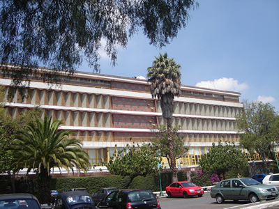

Universidad Nacional Autónoma de México
Facultad de Ingeniería
Universidad Nacional Autónoma de México
Facultad de Ingeniería
Universidad Nacional Autónoma de México
Facultad de Ingeniería
Universidad Nacional Autónoma de México
Facultad de Ingeniería
Espacio dedicado a la docencia, investigación y conservación de colecciones petrográficas y litológicas, apoyando la formación de estudiantes e investigadores en Ciencias de la Tierra.

El objetivo de la presente página es proporcionar información del catálogo litológico de la facultad así como una referencia para los alumnos que, de acuerdo al plan de estudios de la materia y dentro de su objetivo permita contribuir al aprendizaje de una manera dinámica y pedagógica.
Es importante mencionar que el contenido solo es un complemento a la información brindada en las clases. Así mismo esta página puede ser de utilidad a los académicos y profesionales al contar con un acervo digital, software y enlaces que puedan requerir en su vida profesional
Acerca deAcceso rápido a la información más consultada.

Muestras
Equipos
Años de apoyo académico
UNAM